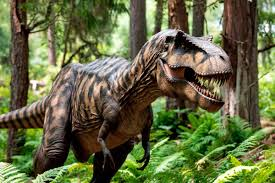
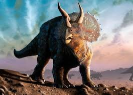
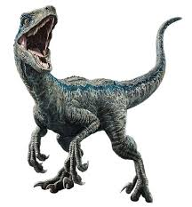
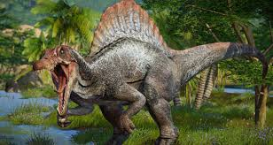
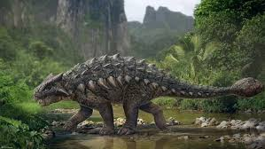
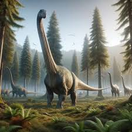

Explora millones de años de historia, descubre criaturas gigantescas, océanos prehistóricos, volcanes, selvas enormes y la increíble evolución del planeta Tierra antes de los humanos.
Empezar el viajeLos dinosaurios dominaron la Tierra durante más de 180 millones de años. Durante ese tiempo el planeta cambió muchísimo, aparecieron nuevas especies, surgieron enormes bosques y ocurrieron grandes extinciones. Los científicos dividen la era de los dinosaurios en tres periodos principales: Triásico, Jurásico y Cretácico.
El Triásico comenzó hace aproximadamente 252 millones de años después de una enorme extinción masiva. La Tierra era muy caliente, seca y llena de volcanes.
Algunos de los primeros dinosaurios fueron el Coelophysis y el Plateosaurus.
El Jurásico comenzó hace aproximadamente 201 millones de años. El clima se volvió más húmedo y aparecieron enormes selvas.
En esta época vivieron gigantes como el Brachiosaurus, Diplodocus y Stegosaurus.
El Cretácico fue el último periodo de los dinosaurios y comenzó hace aproximadamente 145 millones de años.
Durante este periodo existieron dinosaurios como el T-Rex, Triceratops y Velociraptor.
Haz clic sobre cualquier dinosaurio para descubrir información completa sobre su tamaño, alimentación, habilidades y curiosidades.

El rey de los dinosaurios carnívoros.

El dinosaurio de los tres cuernos.

Inteligente, rápido y letal.

El gigante acuático con vela.

El tanque blindado prehistórico.

Uno de los más altos de la historia.
Hace aproximadamente 66 millones de años ocurrió una de las mayores catástrofes de toda la historia. Un enorme meteorito impactó la Tierra provocando incendios gigantescos, terremotos, tsunamis y cambios climáticos extremos.
El meteorito cayó en la actual península de Yucatán en México y liberó una energía impresionante.
El polvo cubrió el cielo durante años bloqueando la luz solar.
Grandes erupciones volcánicas ocurrieron en distintas partes del planeta.
La ceniza y gases tóxicos dañaron gravemente el clima terrestre.
Las temperaturas cambiaron drásticamente y muchas plantas comenzaron a desaparecer.
Sin vegetación los herbívoros murieron y después los carnívoros.
Después de la extinción los mamíferos comenzaron a evolucionar rápidamente y millones de años después aparecieron los seres humanos.
Aunque muchos dinosaurios desaparecieron, algunos pequeños sobrevivieron y evolucionaron hasta convertirse en las aves modernas.
Técnicamente las gallinas son descendientes de los dinosaurios 🐔🦖
Los fósiles son restos o huellas de seres vivos antiguos preservados en roca durante millones de años.
Hace millones de años todos los continentes estaban unidos formando un supercontinente llamado Pangea.
Las aves modernas son descendientes directos de pequeños dinosaurios carnívoros.